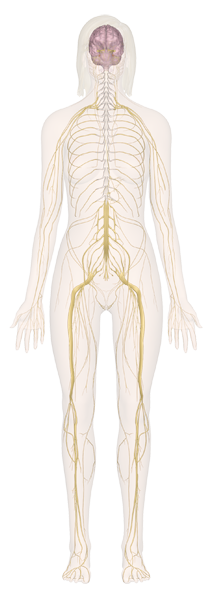

Nerves of the Head and Neck
Within the skeletal structures of the head and the neck lie the most significant portions of the human nervous system. The whole of the brain and the largest body of the spinal cord are enclosed in this section of the nervous system, from there commanding and receiving messages from the whole of the body. Yet at first glance, the brain's appearance is a fairly undifferentiated mass of ugly, wrinkled folds, with the only immediately obvious difference being the differing qualities of the white matter and grey matter. However, this chief organ of the nervous system is, as you would expect, extremely complex. The jelly-like substance of the brain is divided into three parts and two sides. The two sides of the brain, called hemispheres, are different in size, shape, and the roles they play. Within those divisions lie others. These hemispheres have areas, called lobes, which perform specific functions. For instance, the motor cortex controls voluntary muscles. The somatosensory cortex receives and analyzes sensory impulses from all parts of the body. Speech and writing are controlled by the area in the frontal lobe of the dominant hemisphere.
1st Thoracic Nerve
The 1st thoracic nerve is one of thirty-one pairs of spinal nerves that originate from the spinal cord and the uppermost of the twelve (12) thoracic nerves of the torso. Although spinal nerves do not have individual names, they are grouped according to the level from which they stem, and each nerve is numbered in sequence. Hence, there are twelve pairs of thoracic nerves (T1 - T12).
Nerves of the Abdomen, Lower Back & Pelvis
It is within the nervous system of the lower abdomen that the central nervous system ends and the last vestiges of the spinal cord branch out into the peripheral nervous system. Since the vertebrae continues growing later into a child's development than does the spinal cord, the spinal cord actually ends well up inside the last several vertebrae. The lattermost nerve bundles thus descend through and exit the column vertically, unlike the fairly horizontal passages of the vertebral foramina in the thoracic and cervical vertebrae.
Nonetheless, the nervous system near the pelvis is defined by the end of the spinal column and to a lesser extent by the last of the internal organs of the digestive and excretory systems, which are here serviced by fine networks of both voluntary and involuntary nerve systems. These nerves of the inner organs can be sensory, such as detecting fullness of the bladder, or could be motor neurons, such as trigger peristalsis of the intestines.
Nerves of the Leg and Foot
The nerves of the leg and foot serve to propel the body through the actions of the legs, feet, and toes while maintaining balance, both while the body is moving and when it is at rest. Sensory nerves are of course present throughout the lower extremities; however, with the exception of the bottom of the foot, they play a lesser role here than in the upper extremities. Primarily, this section of the peripheral nervous system sends and receives signals regarding locomotion of the body. Some of the impulses are sent from various parts of the brain and spinal cord; some come from sense organs located in the joints, ligaments, and tendons; and some come from the muscles themselves.